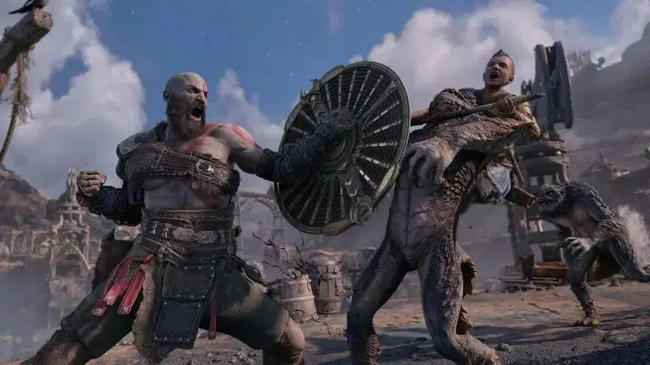

Après avoir été entièrement rebootée, la série God Of War pilotée par Ronald D. Moore pour Amazon Prime Video s’est vue validée pour deux saisons.
Un film avorté avant un retour en série
Dès la sortie du premier jeu God of War, Sony avait déjà l’ambition d’adapter la licence au cinéma. En 2005, un film produit par Charles Roven et Alex Gartner était annoncé, avant que le projet ne soit abandonné. En 2008, une nouvelle tentative voyait le jour, avec Brett Ratner à la réalisation, mais là encore, le projet fut rapidement abandonné.
Une production mouvementée enfin sur les rails
En 2022, Amazon annonçait fièrement la mise en chantier d’une série God of War se concentrant sur l’arc nordique du jeu. Cependant, des tensions créatives ont conduit au départ des scénaristes et à un redémarrage complet du projet. Cette fois, la série semble sur de bons rails, puisque Amazon Prime Video a validé la production de deux saisons.
Ronald D. Moore à la barre, mais un casting encore inconnu
Lors du podcast The Sackhoff Show, animé par Katee Sackhoff (Battlestar Galactica), le scénariste Ronald D. Moore a confirmé qu’Amazon Prime Video avait bien commandé deux saisons.
« Actuellement, je bosse sur l’adaptation d’un jeu qui s’appelle God of War. C’est un gros titre dans l’industrie du jeu vidéo, Amazon a commandé deux saisons et m’a demandé de venir. En ce moment, je suis en salle d’écriture et c’est mon truc. »
Quelle histoire pour l’adaptation ?
Pour l’instant, aucun acteur n’a été annoncé, et la série ne dispose d’aucune date de sortie. Initialement, Amazon souhaitait adapter l’arc nordique du jeu, mais certaines rumeurs suggèrent que la plateforme pourrait finalement opter pour une adaptation de la trilogie originale, centrée sur le massacre des dieux grecs par Kratos.
Sony mise gros sur ses franchises
God of War n’est qu’une des nombreuses franchises de Sony à être adaptées sur le grand et le petit écran. Après Uncharted, Gran Turismo, The Last of Us et Twisted Metal, c’est Horizon Zero Dawn qui aura droit à une adaptation, tout comme Ghost of Tsushima, réalisé par Chad Stahelski (John Wick).
Pendant ce temps, Santa Monica Studio travaille sur une nouvelle franchise, mais l’univers de God of War n’est pas en reste. Cory Barlog, directeur du studio, a laissé entendre que la saga pourrait s’étendre aux panthéons égyptien et maya à l’avenir.
La série God of War parviendra-t-elle à satisfaire les fans après ces années de chaos en coulisses ? Affaire à suivre.
➡️ À lire aussi : Marvel victime d'une fuite massive : Avengers Secret Wars, Doomsday, et bien plus encore !